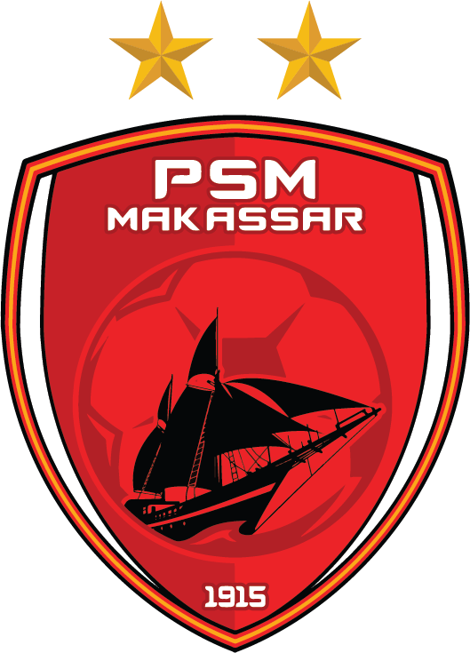

Ayam Jantan Dari Timur #JukuEja
PSM Makassar merupakan klub sepak bola tertua di Indonesia. Dalam catatan sejarah, perjalanan PSM dimulai pada 2 November 1915 saat pemerintah Hindia Belanda menduduki Makassar.